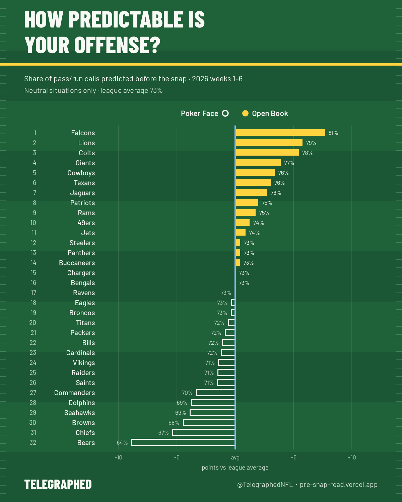

Share of pass/run calls our model predicted before the snap, 2026 weeks 1–6. Neutral situations only (downs 1–3, close game, outside the last two minutes of each half), so garbage time and obvious downs don't count. League average: 73%. ● Open Book = top five, ○ Poker Face = bottom five. New rankings every Tuesday.

| # | Move | Offense | Neutral | All plays |
|---|---|---|---|---|
| 1 | – | Falcons | 81% | 82% |
| 2 | – | Lions | 79% | 78% |
| 3 | – | Colts | 78% | 82% |
| 4 | ▲2 | Giants | 77% | 82% |
| 5 | ▼1 | Cowboys | 76% | 82% |
| 6 | ▲6 | Texans | 76% | 81% |
| 7 | ▲14 | Jaguars | 76% | 77% |
| 8 | ▼3 | Patriots | 75% | 81% |
| 9 | ▼1 | Rams | 75% | 79% |
| 10 | ▲1 | 49ers | 74% | 76% |
| 11 | ▼4 | Jets | 74% | 80% |
| 12 | ▲8 | Steelers | 73% | 77% |
| 13 | ▼4 | Panthers | 73% | 79% |
| 14 | ▲9 | Buccaneers | 73% | 79% |
| 15 | – | Chargers | 73% | 78% |
| 16 | ▲2 | Bengals | 73% | 77% |
| 17 | ▼3 | Ravens | 73% | 81% |
| 18 | ▼2 | Eagles | 73% | 81% |
| 19 | ▼2 | Broncos | 73% | 77% |
| 20 | ▼1 | Titans | 72% | 78% |
| 21 | ▲6 | Packers | 72% | 80% |
| 22 | ▲3 | Bills | 72% | 75% |
| 23 | ▼10 | Cardinals | 72% | 81% |
| 24 | – | Vikings | 71% | 76% |
| 25 | ▼3 | Raiders | 71% | 77% |
| 26 | ▼16 | Saints | 71% | 79% |
| 27 | ▼1 | Commanders | 70% | 76% |
| 28 | – | Dolphins | 69% | 76% |
| 29 | – | Seahawks | 69% | 77% |
| 30 | ▲1 | Browns | 68% | 76% |
| 31 | ▼1 | Chiefs | 67% | 75% |
| 32 | – | Bears | 64% | 74% |
How the model works → · Follow @TelegraphedNFL